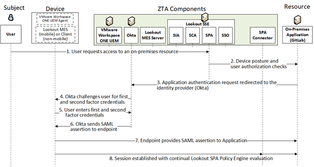
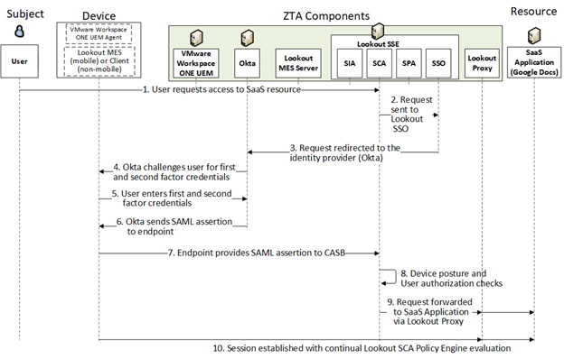
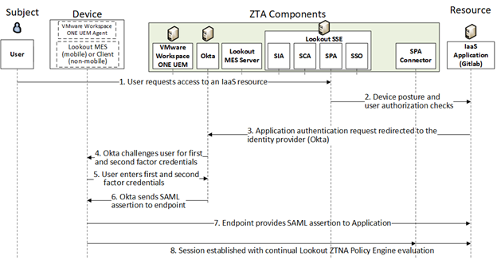
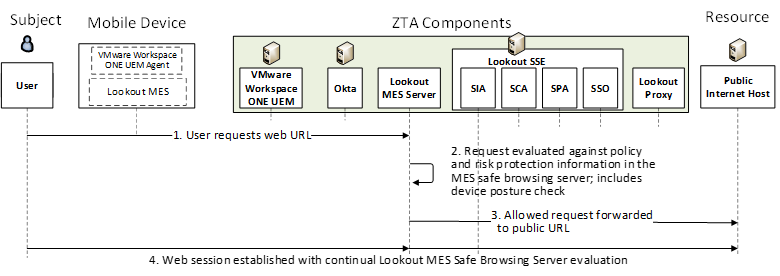
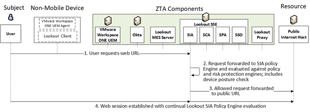
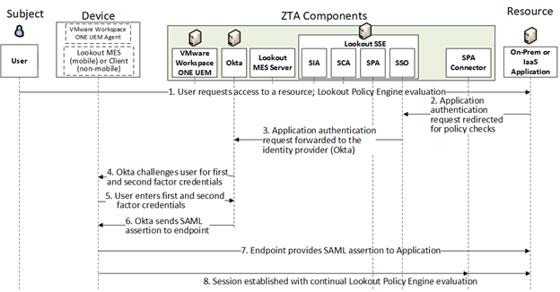

Enterprise 2 Build 5 (E2B5) - SDP and SASE - Lookout SSE and Okta Identity Cloud as PEs#
Note
This page is supplementary material for the NIST SP 1800-35 publication.
Technologies#
E2B5 uses products from Google Cloud, IBM, Lookout, Mandiant, Okta, Radiant Logic, SailPoint, Tenable, and VMware. Certificates from DigiCert are also used. For more information on these collaborators and the products and technologies that they contributed to this project overall, see Collaborators and Their Contributions.
E2B5 components consist of Lookout Security Service Edge (SSE) (includes Secure Private Access [SPA], Secure Cloud Access [SCA], and Secure Internet Access [SIA]), Lookout Secure Private Access Connector, VMware Workspace ONE UEM, Lookout MES, Lookout Client, Okta Identity Cloud, Okta Verify App, Radiant Logic RadiantOne Intelligent Identity Data Platform, SailPoint IdentityIQ, IBM Security QRadar XDR, Tenable.io, Tenable.ad, Tenable Nessus Network Monitor (NNM), Mandiant Security Validation (MSV), Google Cloud, Google Workspace, and DigiCert CertCentral.
Table 1 lists all of the technologies used in Build E2B5. It lists the products used to instantiate each ZTA component and the security function that each component provides.
Table 1 - E2B5 Products and Technologies
Component |
Product |
Function |
|---|---|---|
PE |
Lookout SSE (includes SPA, SCA, SIA) and Okta Identity Cloud |
Decides whether to grant, deny, or revoke access to a resource based on enterprise policy, information from supporting components, and a trust algorithm. |
PA |
Lookout SSE and Okta Identity Cloud |
Executes the PE’s policy decision by sending commands to a PEP that establishes and shuts down the communication path between subject and resource. |
PEP |
Lookout SSE |
Guards the trust zone that hosts one or more enterprise resources; establishes, monitors, and terminates the connection between subject and resource as directed by the PA; forwards requests to and receives commands from the PA. |
ICAM - Identity Management |
Okta Identity Cloud |
Creates and manages enterprise user and device accounts, identity records, role information, and access attributes that form the basis of access decisions within an organization to ensure the correct subjects have the appropriate access to the correct resources at the appropriate time. |
ICAM - Access & Credential Management |
Okta Identity Cloud |
Manages access to resources by performing user and device authentication (e.g., SSO and MFA) and using identity, role, and access attributes to determine which access requests are authorized. |
ICAM - Federated Identity |
Radiant Logic RadiantOne Intelligent Identity Data Platform |
Aggregates and correlates all attributes relating to an identity or object that is being authorized by a ZTA. It enables users of one domain to securely access data or systems of another domain seamlessly, and without the need for completely redundant user administration. Federated identity encompasses the traditional ICAM data, supports identities that may be part of a larger federated ICAM community, and may include non-enterprise employees. |
ICAM - Identity Governance |
SailPoint IdentityIQ |
Provides policy-based, centralized, automated processes to manage user identity and access control functions (e.g., ensuring segregation of duties, role management, logging, access reviews, analytics, reporting) to ensure compliance with requirements and regulations. |
ICAM - MFA |
Okta Verify App |
Supports MFA of a user identity by requiring the user to provide not only something they know (e.g., a password), but also something they have (e.g., a token). |
Endpoint Security - UEM |
VMware Workspace ONE UEM |
Manages and secures enterprise desktop computers, laptops, and/or mobile devices in accordance with enterprise policy to protect applications and data; ensure device compliance; mitigate and remediate vulnerabilities and threats; monitor for suspicious activity to prevent and detect intrusions; prevent, detect, and disable malware and other malicious or unauthorized traffic; repair infected files when possible; provide alerts and recommend remediation actions; and encrypt data. Pushes enterprise applications and updates to devices, enables users to download enterprise applications that they are authorized to access, remotely deletes all applications and data from devices if needed, tracks user activity on devices, and detects and addresses security issues on the device. |
Endpoint Security - EPP |
Lookout MES (for mobile devices) |
Detects and stops threats to endpoints through an integrated suite of endpoint protection technologies including antivirus, data encryption, intrusion prevention, EDR, and DLP. May include mechanisms that are designed to protect applications and data; ensure device compliance with policies regarding hardware, firmware, software, and configuration; monitor endpoints for vulnerabilities, suspicious activity, intrusion, infection, and malware; block unauthorized traffic; disable malware and repair infections; manage and administer software and updates; monitor behavior and critical data; and enable endpoints to be tracked, troubleshooted, and wiped, if necessary. |
Endpoint Security - Endpoint Compliance |
Lookout Client (for non-mobile devices) |
Can enforce policies based on a defined set of endpoint compliance checks to allow or deny user/endpoint access to a resource, but does not perform the functions of an EPP solution to automatically remediate an endpoint. |
Security Analytics - SIEM |
IBM Security QRadar XDR |
Collects and consolidates security information and event data from many sources; correlates and analyzes the data to help detect anomalies and recognize potential threats and vulnerabilities; and logs the data to adhere to data compliance requirements. |
Security Analytics - Endpoint Monitoring |
Tenable.io |
Discovers all IP-connected endpoints and performs continuous collection, examination, and analysis of software versions, configurations, and other information regarding hosts (devices or VMs) that are connected to the network. |
Security Analytics - Vulnerability Scanning and Assessment |
Tenable.io and Tenable.ad |
Scans and assesses the enterprise infrastructure and resources for security risks, identifies vulnerabilities and misconfigurations, and provides remediation guidance regarding investigating and prioritizing responses to incidents. |
Security Analytics - Traffic Inspection |
Tenable NNM |
Intercepts, examines, and records relevant traffic transmitted on the network. |
Security Analytics - Network Discovery |
Tenable NNM |
Discovers, classifies, and assesses the risk posed by devices and users on the network. |
Security Analytics - Security Validation |
Mandiant Security Validation |
Provides visibility and evidence on the status of the security controls’ effectiveness in the ZTA. Enables security capabilities of the enterprise to be monitored and verified by continuously validating and measuring the cybersecurity controls; also used to automate the demonstrations that were performed to showcase ZTA capabilities. Deployed throughout the project’s laboratory environment to enable monitoring and verification of various security aspects of the builds. VMs that are intended to operate as actors are deployed on each of the subnetworks in each of the enterprises. These actors can be used to initiate various actions for the purpose of verifying that security controls are working to support the objectives of zero trust. |
Data Security - Data Access Protection |
Lookout SSE |
Discovers, classifies, and labels sensitive business-critical data in the cloud and on-premises; provides protection by preventing unauthorized access and minimizing the risk of data theft and data leaks using security policy rules. |
Data Security - Data Encryption |
Lookout SSE |
Provides the ability to encrypt/watermark data as needed to protect it on user devices and/or to prevent tampering |
General - Remote Connectivity |
Lookout SSE (Secure Private Access component) |
Enables authorized remote users to securely access the inside of the enterprise. (Once inside, the ZTA manages the users’ access to resources.) |
Resource Protection - Application Connector |
Lookout Secure Private Access Connector |
Component that is deployed to be the front-end for an internal resource. Requests to access the resource are directed to the connector, which responds by initiating a secure connection to the PEP. A connector enables access to a resource to be controlled without requiring the resource to be visible on the network. Note that in this build, the Lookout Secure Private Access connector component is physically located in the cloud and acts as a proxy for resources located both in the cloud and on-premises. This means that for users to get to an on-premises resource, their request is required to go through the Lookout Secure Private Access connector in the cloud. Today all the user traffic must go to the nearest Lookout PoP and come back into the customer’s datacenter (in case of private apps) even for an on-network user. Our current model is a centralized security model. When all traffic is directed to the nearest PoP, it ensures that the same set of security policies and protections are applied consistently to all users, regardless of their location. This uniformity helps in maintaining a strong security posture, as there is no variation in security enforcement that could potentially be exploited by attackers. |
General - Certificate Management |
DigiCert CertCentral TLS Manager |
Provides automated capabilities to issue, install, inspect, revoke, renew, and otherwise manage TLS certificates. |
General - Cloud IaaS |
Google Cloud - GitLab |
Provides computing resources, complemented by storage and networking capabilities, hosted by a cloud service provider, offered to customers on demand, and exposed through a GUI and an API. |
General - Cloud SaaS |
DigiCert CertCentral, Okta Identity Cloud, Lookout SSE, Tenable.io, VMware Workspace ONE, and Google Workspace |
Cloud-based software delivered for use by the enterprise. |
General - Application |
GitLab |
Example enterprise resource to be protected. (In this build, GitLab is integrated with Okta, and IBM Security QRadar XDR pulls logs from GitLab.) |
General - Enterprise-Managed Device |
Windows client, macOS client, and mobile devices (iOS and Android) |
Example endpoints to be protected. All enterprise-managed devices are running Symantec Endpoint Security agent and have the Okta Verify App installed. |
General - BYOD |
Windows client, macOS client, and mobile devices (iOS and Android) |
Example endpoints to be protected. |
Build Architecture#
In this section we present the logical architecture of E2B5. We also describe E2B5’s physical architecture and present message flow diagrams for some of its processes.
Logical Architecture#
Figure 1 depicts the logical architecture of E2B5. It uses numbered arrows to depict the general flow of messages needed for a subject to request access to a resource and have that access request evaluated based on subject identity (both requesting user and requesting endpoint identity), user authorizations, and requesting endpoint health. It also depicts the flow of messages supporting periodic reauthentication of the requesting user and the requesting endpoint and periodic verification of requesting endpoint health, all of which must be performed to continually reevaluate access. The labeled steps in Figure 1 have the same meanings as they do in Architecture - Figure 1. However, Figure 1 includes the specific products that instantiate the architecture of E2B5. Figure 1 also does not depict any of the resource management steps found in Architecture - Figure 1 because the ZTA technologies deployed in E2B5 do not support the ability to perform authentication and reauthentication of the resource or periodic verification of resource health.
E2B5 was designed with Lookout components that serve as PEs, PAs, and PEPs. Okta Identity Cloud also serves as a PE and PA, as well as the build’s identity, access, and credential manager. Radiant Logic acts as a PIP for the PDP as it responds to inquiries and provides identity information on demand in order for Okta Identity Cloud to make near-real-time access decisions. A more detailed depiction of the messages that flow among components to support a user access request can be found in Message Flows for Successful Resource Access Requests.
Figure 1 - Logical Architecture of E2B5

ICAM Information Architecture#
How ICAM information is provisioned, distributed, updated, shared, correlated, governed, and used among ZTA components is fundamental to the operation of the ZTA. The ICAM information architecture ensures that when a subject requests access to a resource, the aggregated set of identity information and attributes necessary to identify, authenticate, and authorize the subject is available to be used as a basis on which to make the access decision.
In E2B5, Okta Identity Cloud, Radiant Logic, and SailPoint integrate with each other as well as with other components of the ZTA to support the ICAM information architecture. The ways that these components work together to correlate identity information and to support actions such as users joining, changing roles, and leaving the enterprise are the same in E2B5 as they are in E1B1, E1B2, E1B3, E1B4, and E2B4. These interactions are described in E1B1 ICAM Architecture.
Physical Architecture#
Enterprise 2 describes the physical architecture of the E2B5 network.
Message Flows for Successful Resource Access Requests#
This section depicts several authentication message flows supported by E2B5. In each flow, a subject who is authorized to access a resource requests and receives access to that resource. Access to the resource is authenticated and authorized by various Lookout components that act as PDPs and PEPs. The scenarios differ according to whether the resource is located on-premises, in a private SaaS cloud, in a private IaaS cloud, or on the public internet. The user can be using either a mobile or non-mobile device. As indicated in the diagrams, If the device is mobile, it has Lookout MES running on it; if it is non-mobile, it has the Lookout client running on it.
In each flow, either Lookout MES (mobile) or the Lookout client (non-mobile) is monitoring the device’s posture. For mobile devices, Lookout MES is continually sending device compliance information to the Lookout MES server, which forwards the information to the Lookout policy engine, SSE (i.e., SPA, SCA, or SIA). For non-mobile devices, the Lookout client is continually sending device compliance information to the Lookout policy engine. This ensures that the Lookout policy engine has up-to-date information about device posture. Communications between the Lookout MES/client, the Lookout MES server, and the Lookout policy engine are occurring in the background on an ongoing basis and are not depicted explicitly in the authentication flows below.
Message Flow for a Request to Access an On-Premises Resource#
Figure 2 depicts the high-level message flow supporting a user who requests access to a resource that is located on-premises.
Figure 2 - Use Case E2B5 - User Requests Access to an On-Premises Resource

The message flow depicted in Figure 2 consists of the following steps:
The user requests access to a resource that is located on-premises. The request is received at the Lookout SSE SPA component.
Lookout SSE evaluates the access request in light of the organization’s access policies, including consideration of the device’s compliance status and user authorization. User is allowed access to the on-premises application’s login page.
The on-premises application redirects the request to Okta, the organization’s identity provider.
Okta challenges the user for their first- and second-factor authentication credentials.
The user provides their first- and second-factor authentication credentials to Okta.
Assuming the user is authenticated successfully, Okta provides a SAML assertion to the endpoint.
The endpoint sends the approved request to the on-premises application via the Lookout SSE SPA Connector.
A session between the endpoint and the resource is established. User traffic to and from the resource is secured according to policy, and Lookout ZTNA evaluates the session on an ongoing basis to ensure that it continues to be permitted according to organizational policy.
Message Flow for a Request to Access a Resource in a Private SaaS Cloud#
Figure 3 depicts the high-level message flow supporting a user who requests access to an enterprise resource that is located in a SaaS cloud.
Figure 3 - Use Case E2B5 - User Requesting Access to an Enterprise Resource in a SaaS Cloud

The message flow depicted in Figure 3 consists of the following steps:
The user requests access to a resource in the SaaS cloud. The request is received at the Lookout SSE SCA component.
Lookout SCA redirects the request to the Lookout Single Sign On (SSO) component.
Lookout SSO redirects the request to Okta, the organization’s identity provider.
Okta challenges the user for their first- and second-factor authentication credentials.
The user provides their first- and second-factor authentication credentials to Okta.
Assuming the user is authenticated successfully, Okta provides a SAML assertion to the endpoint.
The endpoint sends the SAML assertion to Lookout SCA.
Lookout SCA evaluates the access request in light of the organization’s access policies by considering the device’s compliance status and user authorization.
Assuming the access request is permissible by policy, Lookout SCA forwards the approved request to the SaaS application via the Lookout proxy.
A session between the endpoint and the resource is established. User traffic to and from the resource is secured according to policy, and Lookout SCA evaluates the session on an ongoing basis to ensure that it continues to be permitted according to organizational policy.
Message Flow for a Request to Access a Resource in a Private IaaS Cloud#
Figure 4 depicts the high-level message flow supporting a user who requests access to an enterprise resource that is located in an IaaS Cloud.
Figure 4 Use Case E2B5 - User Requesting Access to an Enterprise Resource in an IaaS Cloud

The message flow depicted in Figure 4 consists of the following steps:
The user requests access to a resource in the IaaS cloud. The request is received at the Lookout SSE SPA component.
Lookout SSE evaluates the access request in light of the organization’s access policies including consideration of the device’s compliance status and user authorization. User is allowed access to the IaaS application’s login page.
The IaaS application redirects the request to Okta, the organization’s identity provider.
Okta challenges the user for their first- and second-factor authentication credentials.
The user provides their first- and second-factor authentication credentials to Okta.
Assuming the user is authenticated successfully, Okta provides a SAML assertion to the endpoint.
The endpoint sends the approved request to the IaaS application via the Lookout SPA Connector.
A session between the endpoint and the resource is established. User traffic to and from the resource is secured according to policy, and Lookout SSE evaluates the session on an ongoing basis to ensure that it continues to be permitted according to organizational policy.
Message Flow for a Request to Access a Resource on the Internet Using a Mobile Device#
Figure 5 depicts the high-level message flow supporting a user who is using a mobile device and requests access to an enterprise resource that is located on the public internet.
Figure 5 - Use Case E2B5 - Mobile Device User Requesting Access to a Public Resource on the Internet

The message flow depicted in Figure 5 consists of the following steps:
The mobile device user requests access to a public internet resource by providing the resource’s URL. The Lookout MES client on the mobile device routes this web request to the Lookout’s MES server.
The Lookout MES server evaluates this access request against organizational policy and risk protection information in the MES safe browsing server, including consideration of device posture.
Assuming the requested access has been determined to be permissible, the request is forwarded onto the internet.
A web session between the endpoint and the public internet resource is established. User traffic to and from the resource is secured according to policy, and the Lookout MES server evaluates the session on an ongoing basis to ensure that it continues to be permitted according to organizational policy.
Message Flow for a Request to Access a Resource on the Internet Using a Non-Mobile Device#
Figure 6 depicts the high-level message flow supporting a user who is using a non-mobile device and requests access to an enterprise resource that is located on the public internet.
Figure 6 Use Case E2B5 - Non-Mobile Device User Requesting Access to a Public Resource on the Internet

The message flow depicted in Figure 6 consists of the following steps:
The non-mobile device user requests access to a public internet resource by providing the resource’s URL. The Lookout client on the non-mobile device routes this web request to the Lookout SSE SIA component.
The Lookout SSE SIA evaluates this access request against organizational policy and risk protection information, including consideration of device posture.
Assuming the requested access has been determined to be permissible, the request is forwarded onto the internet.
A web session between the endpoint and the public internet resource is established. User traffic to and from the resource is secured according to policy, and the Lookout SSE SIA evaluates the session on an ongoing basis to ensure that it continues to be permitted according to organizational policy.
Message Flow for a Request to Access a Resource in a Private IaaS Cloud or On-Premises Resource Using a Browser (Mobile and Non-Mobile)#
Figure 7 depicts the high-level message flow supporting a user who is using a non-mobile device and requests access to an enterprise resource that is located either on-premises or in a private IaaS cloud.
Figure 7 - Use Case E2B5 - User Requesting Access to an Enterprise Resource in an IaaS Cloud

The message flow depicted in Figure 7 consists of the following steps:
The user requests access to a resource that is either in a private IaaS cloud or on-premises.
The resource redirects the request to Lookout SSE. Lookout SSE evaluates the access request in light of the organization’s access policies.
Lookout SSE forwards the authentication request to Okta, the organization’s identity provider.
Okta challenges the user for their first- and second-factor authentication credentials.
The user provides their first- and second-factor authentication credentials to Okta.
Assuming the user is authenticated successfully, Okta provides a SAML assertion to the endpoint.
The endpoint sends the approved request to the application via the Lookout SPA Connector.
A session between the endpoint and the resource is established. User traffic to and from the resource is secured according to policy, and Lookout SSE evaluates the session on an ongoing basis to ensure that it continues to be permitted according to organizational policy.